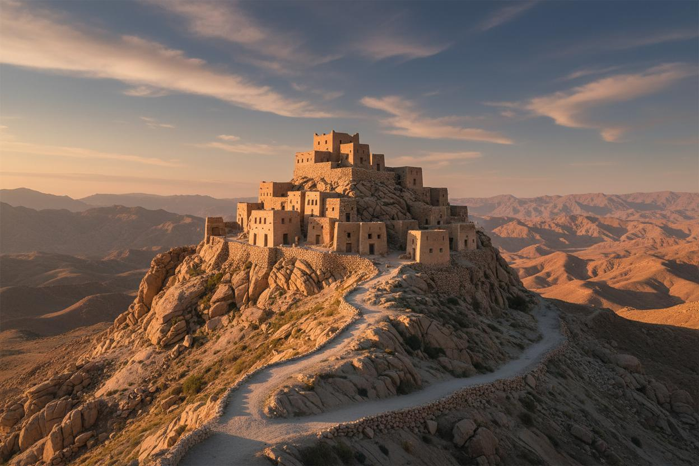
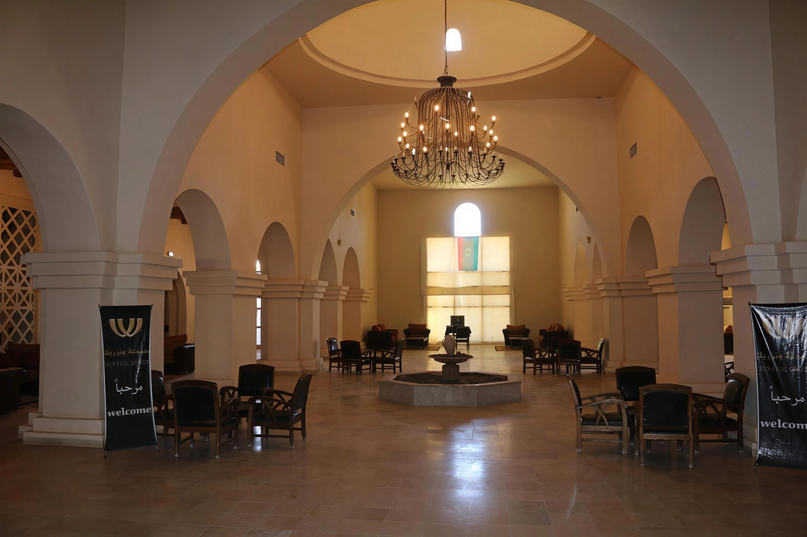

Ghadames
The Pearl of the Desert
Ghadames is a UNESCO World Heritage desert oasis town in the far southwest of Libya, close to where the borders of Libya, Algeria, and Tunisia meet, roughly 460 kilometres from Tripoli. Known locally as the "Pearl of the Desert," it has been continuously inhabited for thousands of years and was one of the most important stops on the trans-Saharan caravan routes. Its Old Town, abandoned by residents in the 1980s in favour of a modern town nearby, survives as one of the most extraordinary examples of pre-Saharan architecture anywhere in the world.
Region
Tripolitania (Sahara)
Distance from Tripoli
~460 km southwest
Known for
UNESCO mud-brick Old Town
Best for
Desert architecture, Berber culture
History of Ghadames
Ghadames began as a settlement of the indigenous Berber peoples of the pre-Sahara and was known to the Romans as Cydamus, an important waystation on trade routes linking the Mediterranean coast to the interior of Africa. Arab conquerors arrived in the 7th century, followed centuries later by Ottoman administrators, Italian colonists in the 19th and 20th centuries, and briefly the French in the 1940s. Through all of these transitions, Ghadames retained its role as a hub of trans-Saharan commerce until the mid-20th century, when trade routes shifted and the town's population gradually moved from the historic Old Town into new housing built nearby. UNESCO inscribed the Old Town as a World Heritage Site in 1986 in recognition of its exceptional architecture and its significance to Berber cultural traditions.
Top Things to Do in Ghadames
The Old Town
A dense, circular settlement of multi-storey mud-brick and palm-wood houses, built on a raised bank for natural defence and connected by a network of covered alleyways that shield residents from the desert heat.
Rooftop walkways
An interconnected system of open-air terraces above the covered streets, traditionally used by the women of Ghadames to move freely across the town without being seen from below — a unique feature of the town's social architecture.
Traditional decorated interiors
Several restored homes in the Old Town open their doors to visitors, showcasing white interior walls painted with red geometric patterns, bronze ornaments, and traditional Berber furnishings.
Local mosques and palm groves
Ghadames' mosques and the surrounding cultivated gardens of date palms, figs, and pomegranates reflect the ingenuity that allowed a settlement to flourish at the edge of the Sahara.


Best Time to Visit & Getting There
Ghadames is best visited between October and May, avoiding the extreme heat of the Saharan summer; the tourist season here has traditionally run through these cooler months. The town is reached by road from Tripoli, a journey of several hours across the desert, and a tour of the Old Town typically takes two to six hours depending on pace. Accommodation options are limited but sufficient for an overnight stay.
Few places in the world let you walk through architecture this specific to its environment, and Ghadames remains one of the most rewarding and least-visited UNESCO sites anywhere in North Africa.